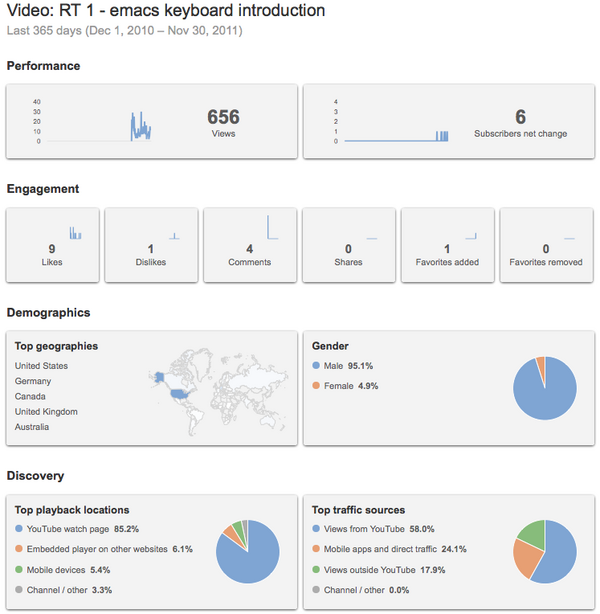
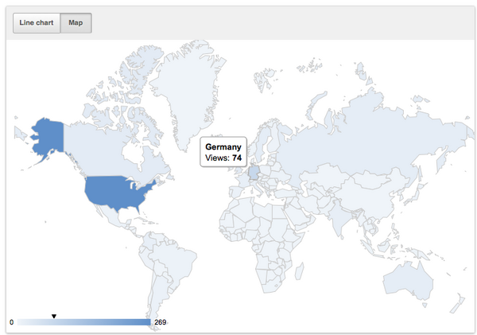
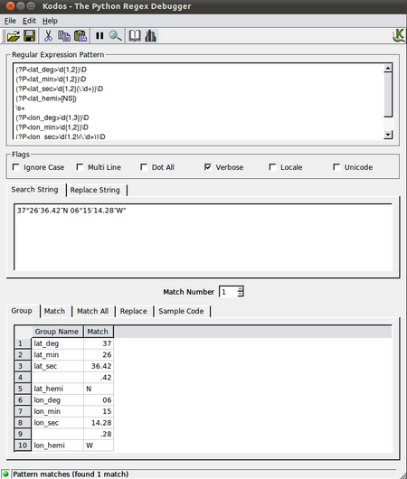
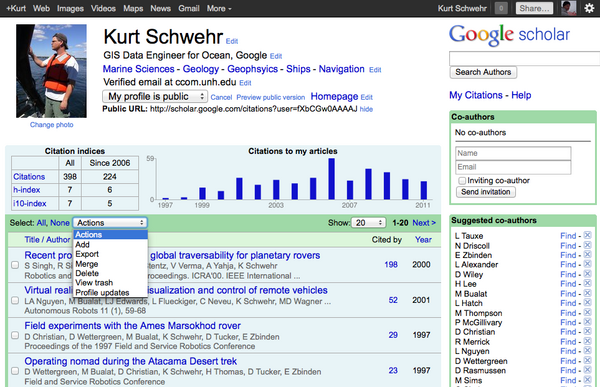
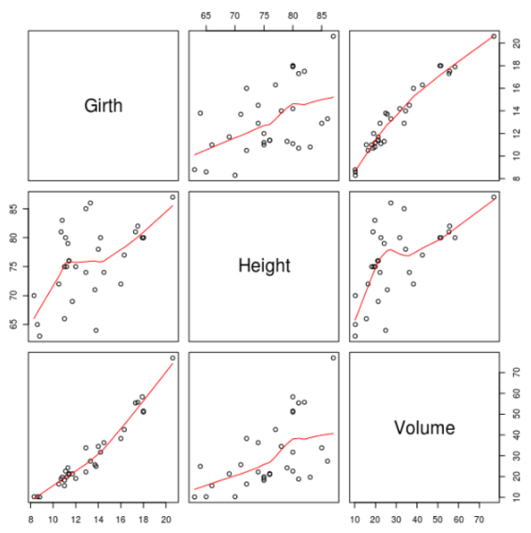
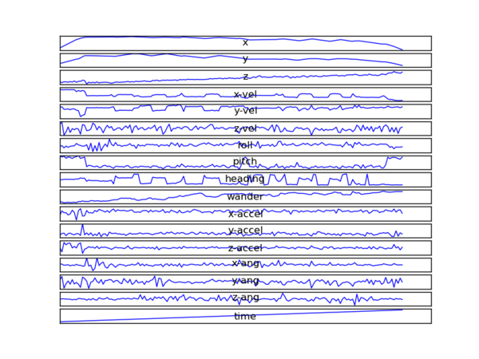
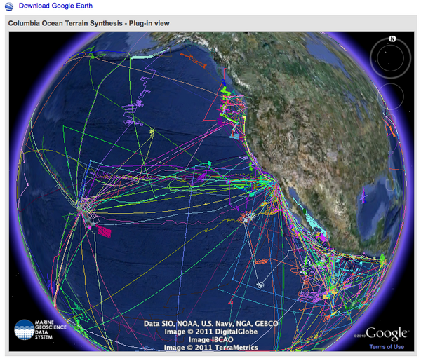
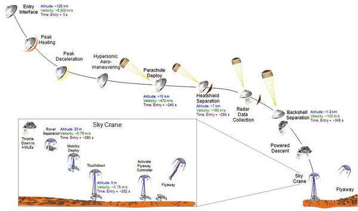

11.30.2011 14:59
Research Tools videos got a huge number of hits
Someone was recently asking me what
the statistics were behind the large number of views (really a lot
more than I expected) for the Research Tools videos. Here are two
of the displays from Google Analytics for those who are
interested.
The color ramp for the countries makes it really hard to tell them apart.


The color ramp for the countries makes it really hard to tell them apart.
11.30.2011 14:29
Xah Lee's emacs lisp excercise in python
Here is my answers to
emacs lisp exercise: latitude-longitude-decimalize. The first
is dumb. It hard codes the characters, which I think
source-highlight mangled pretty badly. The code wasn't very pretty
to start with. The second solution is much more robust. It allows
and character(s) to be the separator(s).
#!/usr/bin/env python
# -*- coding: utf-8 -*-
test_data = r"37ÃÇ°26âÂIJ36.42âÂijN 06ÃÇ°15âÂIJ14.28âÂijW"
def decimal_deg_simple(coord_str):
lat_str, lon_str = coord_str.split()
lat = int(lat_str.split('ÃÇ°')[0])
lat += int(lat_str.split('ÃÇ°')[1].split('âÂIJ')[0]) / 60.
lat += float(lat_str.split('âÂIJ')[1][:-4]) / 3600.
if 'S' in lat_str:
lat = -lat
lon = int(lon_str.split('ÃÇ°')[0])
lon += int(lon_str.split('ÃÇ°')[1].split('âÂIJ')[0]) / 60.
lon += float(lon_str.split('âÂIJ')[1][:-4]) / 3600.
if 'W' in lon_str:
lon = -lon
return lat,lon
print 'simple:', decimal_deg_simple(test_data)
########################################
# Use a regular expression
import re
rawstr = r"""(?P<lat_deg>\d{1,2})\D+
(?P<lat_min>\d{1,2})\D+
(?P<lat_sec>\d{1,2}(\.\d+))\D+
(?P<lat_hemi>[NS])
\s+
(?P<lon_deg>\d{1,3})\D+
(?P<lon_min>\d{1,2})\D+
(?P<lon_sec>\d{1,2}(\.\d+))\D+
(?P<lon_hemi>[EW])
"""
compile_obj = re.compile(rawstr, re.VERBOSE)
def decimal_deg_re(coord_str):
g = compile_obj.search(coord_str).groupdict() # m is match
lat = int(g['lat_deg']) + int(g['lat_min'])/60. + float(g['lat_sec']) / 3600.
if g['lat_hemi'] == 'S':
lat = -lat
lon = int(g['lon_deg']) + int(g['lon_min'])/60. + float(g['lon_sec']) / 3600.
if g['lon_hemi'] == 'S':
lon = -lon
return {'y':lat, 'x':lon}
print 're:', decimal_deg_re(test_data)
This would be a lot harder without kodos for building regular
expressions in python:
11.30.2011 13:12
Google Scholar Citations
I got early access to Google Scholar
Citations, but in the craziness of the semester, I forgot to set it
up to take a look. Here is my Google Scholar Citation page:
Kurt
Schwehr - Google Scholar Citations. The best part about waiting
till now to try it is that the service is open to all, so I'm not
talking about something that other people can't use.
Google Scholar Citations Open To All on the Google Scholar Blog, Nov 16, 2011.
It's great that you can grab the entire citation index for a person. A quick look at what the BibTex exporting looks like... it's not very complete, but it's a good start.
Google Scholar Citations Open To All on the Google Scholar Blog, Nov 16, 2011.

It's great that you can grab the entire citation index for a person. A quick look at what the BibTex exporting looks like... it's not very complete, but it's a good start.
@article{schwehr2008visualizing,
title={Visualizing the Operations of the Phoenix Mars Lander},
author={Schwehr, K. and Andres, P. and Craig, J. and Deen, R. and De Jong,
E. and Fortino, N. and Gorgian, Z. and Kuramura, K. and Lemmon,
M. and Levoe, S. and others},
journal={AGU Fall Meeting Abstracts},
volume={1},
pages={1137},
year={2008}
}
@article{schwehr2009discovery,
title={Discovery of Marine Datasets and Geospatial Metadata Visualization},
author={Schwehr, KD and Brennan, RT and Sellars, J. and Smith, S.},
journal={AGU Fall Meeting Abstracts},
volume={1},
pages={1132},
year={2009}
}
11.30.2011 09:07
RT Lecture 25 - Rob Braswell covering R for Statistics
Yesterday, Rob gave an awesome class
on the R language for statistics.
mp3, pdf of screenshots, 25-R-lab1-Intro.pdf, 25-r-statistics.org (on bitbucket via hg).
It's pretty awesome that R comes with some nice built in data sets!
mp3, pdf of screenshots, 25-R-lab1-Intro.pdf, 25-r-statistics.org (on bitbucket via hg).
It's pretty awesome that R comes with some nice built in data sets!
R
> summary(trees)
Girth Height Volume
Min. : 8.30 Min. :63 Min. :10.20
1st Qu.:11.05 1st Qu.:72 1st Qu.:19.40
Median :12.90 Median :76 Median :24.20
Mean :13.25 Mean :76 Mean :30.17
3rd Qu.:15.25 3rd Qu.:80 3rd Qu.:37.30
Max. :20.60 Max. :87 Max. :77.00
>

11.27.2011 22:32
RT video 19 - Mercurial (hg) for revision control
A basic introduction to Mercurial
(hg) for for revision control. At 36 minutes, this is my longest
video yet.
video-19-mercurial-hg-dvcs.org on BitBucket
video-19-mercurial-hg-dvcs.org on BitBucket
11.27.2011 08:43
Computer History - Secret History of Silicon Valley
I need to visit the computer history
museum. I'm not sure how I've managed to never make it there... or
was this the same place that was in San Jose in the early
90's.
A good view for a slow start Sunday morning. This is the kind of stuff I would love to see on the History or Science channels.
The Secret History of Silicon Valley (blog series)
Found via Palantir, the War on Terror's Secret Weapon on Businessweek and Palantir, the War On Terror's Secret Weapon on slashdot.
A good view for a slow start Sunday morning. This is the kind of stuff I would love to see on the History or Science channels.
The Secret History of Silicon Valley (blog series)
Found via Palantir, the War on Terror's Secret Weapon on Businessweek and Palantir, the War On Terror's Secret Weapon on slashdot.
11.26.2011 12:57
sbet parsing and ploting with numpy and matplotlib
I finally sat down and worked through
how to read SBET files using the numpy binary reader "fromfile". I
have to make a list of (field name,type), so I use the zip trick to
mash a list of 'double' repeated for each field name. Only later
did I realize that dtype can be set from a list of names and a list
of types, which would be clearer. The dtype ends up looking like
this when I do 'sbet_data.dtype':
This works great for files with only one type of record, but I have yet to figure out how to handle something like the typical multibeam file formats like the Reson and Simrad/Kongsberg raw all format that have many packet/datagram types and some of which are variable size.
Sources: NumPy Data type objects (dtype)
SciPy Cookbook / InputOutput
Matplotlib Text properties and layout
Hiding axis text in matplotlib plots on Stackoverflow.
dtype([('time', '<f8'), ('y', '<f8'), ('x', '<f8'), ('z', '<f8'), ('x-vel', '<f8'), ('y-vel', '<f8'),
('z-vel', '<f8'), ('roll', '<f8'), ('pitch', '<f8'), ('heading', '<f8'), ('wander', '<f8'),
('x-accel', '<f8'), ('y-accel', '<f8'), ('z-accel', '<f8'), ('x-ang', '<f8'), ('y-ang', '<f8'), ('z-ang', '<f8')])
And this is the whole code:
import numpy as np
sbet_file = open('sample.sbet','rb')
fields = ('time','y','x','z','x-vel','y-vel','z-vel','roll','pitch','heading','wander',
'x-accel','y-accel','z-accel','x-ang','y-ang','z-ang')
sbet_dtype = zip(fields, ('double',)* len(fields))
sbet_data = np.fromfile(file=sbet_file, dtype=sbet_dtype)
sec_of_the_week = sbet_data['time']
x = sbet_data['x'] # longitude
y = sbet_data['y'] # latitude
from matplotlib import pyplot
pyplot.interactive(True)
for field_num, field in enumerate(fields):
pyplot.subplot(len(fields), 1, field_num )
pyplot.plot(sbet_data[field])
for ax_num, ax in enumerate(pyplot.figure(1).get_axes()):
ax.get_xaxis().set_ticks([])
ax.get_yaxis().set_ticks([])
ax.text(0.5, 0.5, fields[ax_num],
horizontalalignment='center', verticalalignment='center',
transform = ax.transAxes)
pyplot.savefig('sample-sbet-graph.png')

This works great for files with only one type of record, but I have yet to figure out how to handle something like the typical multibeam file formats like the Reson and Simrad/Kongsberg raw all format that have many packet/datagram types and some of which are variable size.
Sources: NumPy Data type objects (dtype)
SciPy Cookbook / InputOutput
Matplotlib Text properties and layout
Hiding axis text in matplotlib plots on Stackoverflow.
11.26.2011 08:31
Google Oceans
Since I will be starting into Google
Oceans in 2012, I figured I would take a quick peak into what
Wikipedia says about Google
Ocean on the Google Earth entry.
Columbia Ocean Terrain Synthesis
And in other exciting ocean news (of which there are just too many cool things going on right now)... 4 Wave Gliders Begin Their Autonomous Pacific Crossing Attempt by Liquid Robotics. And the Liquid Robotics crew just gave me a demo of NOAA's ERDDAP software (the Environmental Research Division's Data Access Program). I need to spend some time with ERDDAP to understand what really is going on under the hood.
Water and ocean Introduced in version 5.0 (February 2009), the Google Ocean feature allows users to zoom below the surface of the ocean and view the 3D bathymetry beneath the waves. Supporting over 20 content layers, it contains information from leading scientists and oceanographers.[30] On April 14, 2009, Google added underwater terrain data for the Great Lakes.[31] In 2010, Google added underwater terrain data for Lake Baikal. In June 2011, higher resolution of some deep ocean floor areas increased in focus from 1-kilometer grids to 100 meters thanks to a new synthesis of seafloor topography released through Google Earth.[32] The high resolution features were developed by oceanographers at Columbia UniversityâÄôs Lamont-Doherty Earth Observatory from scientific data collected on research cruises. The sharper focus is available for about 5 percent of the oceans (an area larger than North America). Underwater scenery can be seen of the Hudson Canyon off New York City, the Wini Seamount near Hawaii, and the sharp-edged 10,000-foot-high Mendocino Ridge off the U.S Pacific Coast. There is a Google 2011 Seafloor Tour for those interested in viewing ocean deep terrain.There are three links in the Ocean section including this one to a LDEO press release from June 2011: New Google Ocean Maps Dive Deep: Up Close and Personal With Landscapes of the Abyss. The Earth team has done some pretty amazing stuff with the world ocean data and I can't wait to add to what has already been started and to help people all over the world to add and promote ocean content for Earth, Maps and many other tools.
Columbia Ocean Terrain Synthesis

And in other exciting ocean news (of which there are just too many cool things going on right now)... 4 Wave Gliders Begin Their Autonomous Pacific Crossing Attempt by Liquid Robotics. And the Liquid Robotics crew just gave me a demo of NOAA's ERDDAP software (the Environmental Research Division's Data Access Program). I need to spend some time with ERDDAP to understand what really is going on under the hood.
11.25.2011 16:11
Mars Science Laboratory launching
Curiosity (Mars Science Laboratory;
MSL) is set to launch tomorrow. Landing will be in August, 2012. If
only we could have a camera on Mars to watch the crazy sky crane
landing. On the mission, there is a timeline
page. A nice link posted by Vandi:
How Will MSL Navigate to Mars? Very Precisely.
MSL in the Planetary Photojournal
I still have this strange desire to write a CCSDS parser in python.
Update 2011-Nov-26: Mars Science Laboratory launches
MSL in the Planetary Photojournal

I still have this strange desire to write a CCSDS parser in python.
Update 2011-Nov-26: Mars Science Laboratory launches
11.24.2011 00:13
RT 24 - Python Binary Files part 4 - command line args
Topics include "What is GIS," using
glob.glob to expand file names with "*", using sys.argv directly to
list input files and using argparse to properly handle command line
arguments.
html, pdf, mp3 and org (in BitBucket hg).
Comment here: rt 24 comments
html, pdf, mp3 and org (in BitBucket hg).
Comment here: rt 24 comments
11.19.2011 08:36
RT 23 - Part 3: Parsing binary SBET files with python's struct
In this class, we do our first
mercurial pull of changes. We then add helper functions to our
sbet.py module to give us the number of datagrams in an sbet file,
tell us at what offset any particular datagram is located and add a
generator function allowing cleaner for loops over sbet
files.
23-python-binary-files-part-3.html, mp3, pdf and comments go here.
Remember that at this point, you should be getting the org mode formatted class notes via mercurial (hg). To get set up:
23-python-binary-files-part-3.html, mp3, pdf and comments go here.
Remember that at this point, you should be getting the org mode formatted class notes via mercurial (hg). To get set up:
mkdir ~/projects cd ~/projects sudo apt-get install mercurial # Install hg on ubuntu & debian linux hg clone https://bitbucket.org/schwehr/researchtoolsAnd every time you start working on the class, do a pull and update to get the latest versions.
cd ~/projects/researchtools hg pull # Bring the changes down to the local "repo" hg update # Change the working files to have the latest changes
11.16.2011 10:55
Joining Google for Oceans
Some really big news about me... I'll
be joining Google in January 2012 to work as a GIS Data Engineer on
Oceans!
11.16.2011 10:49
RT 22 - Part 2: Parsing binary SBET files with python's struct
Rob Braswell has
tentatively agreed to give us a lecture on Data Analysis with
R on Nov. 29th. Rob taught
EOS 864 while he was a full-time Research Professor at UNH. I
haven't done any work with R myself, but I've seen some really
great work done with it. I'm super excited to sit in on his
class.
Notes for the class should now be retrieved via mercurial/hg from https://bitbucket.org/schwehr/researchtools. The rest of the material is in the usual locations in the class directory: mp3, pdf, html
Notes for the class should now be retrieved via mercurial/hg from https://bitbucket.org/schwehr/researchtools. The rest of the material is in the usual locations in the class directory: mp3, pdf, html
11.15.2011 06:33
Apples Sandbox in 10.7
I had a network failure with my
VMWare Fusion 3.1.3 Ubuntu 11.04 instance this morning and in the
process of trying to debug what when wrong I ran into this in my
/var/log/syslog
So what is the correct way to setup ntpd with stats on a Mac??? Things I don't have time for right now.
Nov 15 06:20:23 Catbox4-MBAir sandboxd[362] ([48]): ntpd(48) deny file-write-create /private/var/log/ntpstats/peerstats.20111115 Nov 15 06:20:23 Catbox4-MBAir ntpd[48]: can't open /var/log/ntpstats/peerstats.20111115: Operation not permittedWhat? Apple has sandboxed their setup of ntpd? This is the first time I had seen anything with their sandbox setup. I did an "mdfind ntpd.sb" and found the config file. Here is a partial sample of /usr/share/sandbox/ntpd.sb:
;;
;; ntpd - sandbox profile
;; Copyright (c) 2006-2009 Apple Inc. All Rights reserved.
;;
;; WARNING: The sandbox rules in this file currently constitute
;; Apple System Private Interface and are subject to change at any time and
;; without notice. The contents of this file are also auto-generated and not
;; user editable; it may be overwritten at any time.
;;
(version 1)
(deny default)
(allow process-fork)
(allow iokit-open (iokit-user-client-class "RootDomainUserClient"))
;;; Allow NTP specific files
(allow file-read-data file-read-metadata
(literal "/private/etc/ntp-restrict.conf")
(regex "^/private/etc/ntp\\.(conf|keys)$")
(literal "/private/var/mobile/Library/Preferences/ntp.conf")
(regex "^/private/etc/(services|hosts)$")
(regex "^/private/var/run/tmpntp.conf.*"))
(allow file-write* file-read-data file-read-metadata
(literal "/private/var/run/ntpd.pid")
(regex "^/private/var/(db|mobile/Library/Preferences)/ntp\\.drift(\\.TEMP)?$")
(subpath "/private/tmp")
(subpath "/private/var/tmp"))
; ... snip ...
So a couple of observations. First, if this is autogenerated, what
should I be editing to allow ntpd to write log files? Second, this
looks like LISP!!! Third, the copyrights are 2006-2009! I went back
and looked at 10.5 and 10.6 machines that I still have up and
running. They both have sandbox and ntpd.sb. So for the last bunch
of years, I've never really understood why ntpd wouldn't write the
stats... now I know why.So what is the correct way to setup ntpd with stats on a Mac??? Things I don't have time for right now.
man -k sandbox asctl(1) - App Sandbox Control Tool sandbox(7) - overview of the sandbox facility sandbox-exec(1) - execute within a sandbox sandbox-simplify(1) - simplify a sandbox profile created by a trace directive sandbox_init(3), sandbox_free_error(3) - set process sandbox sandboxd(8) - sandbox daemonAt least a full reboot fixed whatever what wrong with VMWare's networking.
11.13.2011 08:55
Research Tools Mercurial (hg) release
I had originally hoped to cover
distributed
version control systems (DVCS) using Mercurial (hg), during the
first two weeks of the course, but then I realized that makes
little sense when the class is command line focused and many people
taking the course have no prior exposure to the command line. As a
result, I also never got around to setting up a hg repository
(repo) and pushing it to someplace public. I've been stuck in my
Subversion (svn) rut.
While svn is rock solid and much better than the old concurrent
version system (CVS), DVCS systems make much more sense, especially
for people who spend a lot of time working without normal internet
access (e.g. on research vessels out on the oceans). While I've
been using git for most of my
work (schwehr@github),
mercurial seems to be cleaner/simpler and thus a better choice for
most programming scientists. Plus, if you know git or hg, switching
from one to the other isn't hard and the core commands are very
similar. To top it off, CCOM is switching from svn to hg as the
version control system that they recommend for new projects
(RhodeCode).
Also, since I've been using github and bitbucket a lot, I am trying to mix things up by using BitBucket for this project. Unfortunately, the audio, video and examples are too big for this repository, so you'll have to get them from the class website or YouTube.
What is a good solution for hosting the lecture/class audio files? It does not seem right to just drop the audio into YouTube unless I put slides to go with it. I just don't have the time to pull that off.
I'm very much interested in improving this material, so please clone this repository, make changes and send me "pull requests" when you have an improvement or addition that you think is worth pushing back into the material.
https://bitbucket.org/schwehr/researchtools/src
So, please clone this repo!
Also, since I've been using github and bitbucket a lot, I am trying to mix things up by using BitBucket for this project. Unfortunately, the audio, video and examples are too big for this repository, so you'll have to get them from the class website or YouTube.
What is a good solution for hosting the lecture/class audio files? It does not seem right to just drop the audio into YouTube unless I put slides to go with it. I just don't have the time to pull that off.
I'm very much interested in improving this material, so please clone this repository, make changes and send me "pull requests" when you have an improvement or addition that you think is worth pushing back into the material.
https://bitbucket.org/schwehr/researchtools/src
So, please clone this repo!
hg clone https://bitbucket.org/schwehr/researchtools
11.11.2011 18:14
Research Tools Lecture 21 - Parsing binary data using python struct module - SBETs
Using struct to decode Applanix
POSPAC SBET navigation files:
21-python-binary-files.org, html, mp3 and pdf
comment here
See also, my much more complete (but not yet finished) document:
python-binary-files.org / python-binary-files.html
21-python-binary-files.org, html, mp3 and pdf
comment here
See also, my much more complete (but not yet finished) document:
python-binary-files.org / python-binary-files.html
11.10.2011 14:44
National Academy Report on Deepwater Horizon (DWH)
Just out today. I've had zero input
into any of the reports out there. This report is chaired by Larry
Mayer, the director of the Center for Coastal and Ocean Mapping
(CCOM) at UNH.
New Report Offers Broad Approach to Assessing Impacts of Ecological Damage From Deepwater Horizon Oil Spill
Approaches for Ecosystem Services Valuation for the Gulf of Mexico After the Deepwater Horizon Oil Spill: Interim Report
New Report Offers Broad Approach to Assessing Impacts of Ecological Damage From Deepwater Horizon Oil Spill
Approaches for Ecosystem Services Valuation for the Gulf of Mexico After the Deepwater Horizon Oil Spill: Interim Report
11.09.2011 16:44
MIT Open Course Ware (OCW) - Intro to Computer Science in Python
This is a fairly different style to
what I've been doing this semester, which makes it a valuable
resource for people going through my Research Tools course. While
I'm blown away with 500 views so far on my first video, I have to
say I'm impress and a bit jealous with his ~15000 views on lecture
18 that I link to below and the 715000 views of lecture 1...
MIT 6.00 Intro to Computer Science & Programming, Fall 2008 with 20 hours of video. That's right, you could watch this whole course in one day with an insane marathon session. I have to admit that I've only watched about 10 minutes of Lecture 18, so I can't say that I really know how good this class is, but I'd wager that it's impressive.
MIT 6.00 Intro to Computer Science & Programming, Fall 2008 with 20 hours of video. That's right, you could watch this whole course in one day with an insane marathon session. I have to admit that I've only watched about 10 minutes of Lecture 18, so I can't say that I really know how good this class is, but I'd wager that it's impressive.
This subject is aimed at students with little or no programming experience. It aims to provide students with an understanding of the role computation can play in solving problems. It also aims to help students, regardless of their major, to feel justifiably confident of their ability to write small programs that allow them to accomplish useful goals. The class will use the Python programming language. Instructors: Prof. Eric Grimson, Prof. John Guttag View the complete course at: http://ocw.mit.edu/6-00F08 License: Creative Commons BY-NC-SA More information at http://ocw.mit.edu/terms More courses at http://ocw.mit.eduLecture 18: Presenting simulation results, Pylab, plotting
11.08.2011 09:39
RT Video 18 - Heading BAG bathymetry with h5py in python
Using h5py, numpy and matplotlib from
within ipython:
11.01.2011 09:16
Wherecamp Boston and G+ permalinks
Is this how you link to a G+ article?
https://plus.google.com/u/0/102101513984015207006/posts/YYTHdoJZs2J.
Not the most friendly link.
I wanted to share my post and get people to post what they think are good iOS or Droid apps for science.
I wanted to share my post and get people to post what they think are good iOS or Droid apps for science.
Had a great time at Where Camp Boston day 1 on Saturday! A big part of the entertainment was the trip down and back. Awesome fall colors on the way down, severe winter storm with 6+ inches of snow on the way back with Amtrak having all the crossing signals broken in NH... nothing like gates stuck part way down and red lights flashing with or without trains. Ben, Monica and I had great (and geeky) conversations the whole way. I so need to work up a document going through how to use iOS devices for science. What is your favorite iOS use for science? And droid users... someone should definitely start the same for Android!